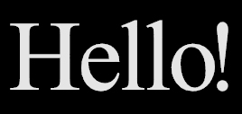
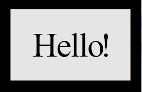

If you're new to Python
and VPython: Introduction
A VPython tutorial
Pictures of 3D objects
What's new in VPython 6
VPython web site
VPython license
Python web site
Math module (sqrt etc.)
Numpy module (arrays)
The shapes library |

The shapes library is an auxiliary library to be used together with the 3D extrusion object. It helps in creating complex 2D polygons by creating and combining basic geometric shapes. The 2D Polygon objects provided can be operated on with simple geometric operators, add (+), subtract (-), intersect (&), and exclusive or (^), to obtain more complex shapes. In the shape shown above, a circle has been subtracted from a star. Shapes can also be used alone with the extrusion object.
2D shape objects are created in the xy plane as a Polygon object. The object is made up of a list of 2D points defining the contour of the shape.
The shapes library is similar to the paths library, but with some differences owing to the different characteristics of the pos and shape attributes of the extrusion object. You can assign a path from the paths library to shape.
Choose one of the shapes that are available in this library:
Be sure to read about rectangle, which explains features common to all of these objects (rotate, scale, xscale, yscale, roundness, thickness, and invert).
rectangle
circle
ellipse
line
arc
triangle
pentagon
hexagon
ngon
star
trapezoid
cross
pointlist
text
gear
List of parameters
rt = shapes.rectangle(pos=(-2,3), width=5, height=3)
creates a rectangle object with its center at pos=(-2,3) with respect to the extrusion curve points, with width=5 and height=3. If the height value is omitted the shape is a square with its sides equal to the given width. Nothing is displayed as this is not a VPython object but a Polygon object. If you print rt you will see this contour information:
Polygon:
<0:Contour: [0:-2.5, -1.5] [1:-2.5, 1.5] [2:2.5, 1.5] [3:2.5, -1.5] [4:-2.5, -1.5]>
The output can be visualized in VPython by executing either of the following statements. A Polygon has more than one contour if there are holes, and the first contour of rt is rt.contour(0).
extrusion(shape=rt) |
|

A rotated rectangle can be obtained like this:
rt = shapes.rectangle(width=5, height=3, rotate=pi/6)
This produces a rectangle rotated counterclockwise pi/6 radians (30 degrees) around the specified or default pos. A negative angle rotates the figure clockwise. |
 |
A rounded rectangle (a rectangle whose corners are rounded) can be obtained by using the roundness parameter:
rt = shapes.rectangle(width=5, height=3, roundness=0.1)
creates a rectangle with its corners replaced by a circular arc of radius 0.3. The radius of this arc is calculated by multiplying the roundness parameter by the shortest side of the rectangle, the height in this case. A roundness of 0.1 is often a good choice. |
 |
An inverted rounding (called a chamfer) can be obtained by setting the invert parameter as True, together with the roundness parameter.
rt = shapes.rectangle(width=5, height=3, |
 |
The rectangle or its sides can be scaled by using the scale paramaters:
rt = shapes.rectangle(width=5, height=3, scale=2)
effectively creates a rectangle of size 10 x 6. Width and height of a rectangle can be scaled independently by using xscale, yscale parameters:
rt = shapes.rectangle(width=4, height=3, xscale=2,
yscale=3)
creates a rectangle of size 8 x 6.
All the previous definitions created solid rectangles covering the whole area defined by the width and the height of the rectangle. It is possible to define hollow rectangles – a rectangle with a rectangular hole, by using the thickness parameter:
rt = shapes.rectangle(width=5, height=3, |
 |
defines a "rectangular frame" with a size 5 x 3, and a thickness of 0.1 times the shortest side of the rectangle, the height in this case. This results in a rectangle with a rectangular hole. Therefore there are two rectangular contours: One is the original rectangle of size 5 x 3 (the outer contour), and the second one is the "hole" of size 4.4 x 2.4 (0.1 times the short side of 3 gives a distance between the inner and outer contours of 0.3). The resultant shape is the area covered between these two contours. If the thickness parameter is not used, or if it is equal to zero, then there is no hole, and a solid rectangle is obtained.
cr = shapes.circle(radius=2, np=64) |
 |
creates a circle object at pos=(0,0), with radius=2. There are 64 points used to approximate the circular contour; the default value for the number of points (np) is 32. The circle contour cannot be rounded. A circle can be scaled to obtain a different size circle or an ellipse.
A circular ring is obtained if the thickness paramater is set to a positive value. |
 |
For the circle, the starting angle is by default angle1=0 and the ending angle2 = 2*pi, measured counterclockwise from the +x axis. This partial circle was made by setting angle1=0.15*pi and the ending angle by angle2=pi. You can rotate the shape by specifying rotate to be something other than zero. For a partial circle the thickness is ignored. |
 |
el = shapes.ellipse(width=5, height=3) |
 |
creates an ellipse object at pos=(0,0), with width=5 and height=3. If height is omitted it is set to be equal to width which causes the output to be a circle. The ellipse can be rotated and scaled but not rounded. An elliptical ring is obtained if the thickness parameter is set to a positive value.
For the ellipse, the starting angle is by default angle1=0 and the ending angle by angle2 = 2*pi, measured counterclockwise from the +x axis. A partial ellipse can be made by setting angle1=0.15*pi and angle2=pi. For a partial ellipse the thickness is ignored.
L = shapes.line(start=(1,0), end=(1,1), np=20)
creates a straight line going from (1,0) to (1,1), divided into 20 equal lengths. The line can be rotated and scaled but not rounded. If no thickness is specified, the line is given a very small thickness so that the contour is closed. The defaults are pos=(0,0), start=(0,0), end=(0,1),
ar = shapes.arc(radius=2, angle1=0, angle2=pi/2) |
 |
creates a semicircular arc centered at pos=(0,0), with radius=2. The arc can be rotated and scaled, but not rounded. If no thickness is specified, the arc is given a very small thickness so that the contour is closed.
tr = shapes.triangle(length=5) |
 |
creates a triangle object at pos=(0,0), with all sides equal to 5. The triangle can be rotated and rounded as well as scaled. A triangular frame is obtained if the thickness parameter is set to a positive value.
A triangular frame is obtained if the thickness parameter is set to a positive value. |
 |
pt = shapes.pentagon(length=5) |
 |
creates a pentagon object at pos=(0,0), with all sides equal to 5. The pentagon can be rotated and rounded as well as scaled. A pentagonal frame is obtained if the thickness parameter is set to a positive value.
hx = shapes.hexagon(length=5) |
 |
creates a hexagon object at pos=(0,0), with all sides equal to 5. The hexagon can be rotated and rounded as well as scaled. A hexagonal frame is obtained if the thickness parameter is set to a positive value.
poly = shapes.ngon(np=7, length=5) |
 |
creates a heptagon object at pos=(0,0), with all seven sides equal to 5. The heptagon can be rotated and rounded as well as scaled. One can also create an ngon object to fit into a circle with a given radius. In this case the length is calculated automatically:
poly = shapes.ngon(np=7, radius=4)
The thickness parameter can be used to create a frame of shape of the ngon.
st = shapes.star(n=5) |
 |
creates a star object at pos=(0,0), with 5 beams sticking out (the default), fitting into a circle of radius=1. As you change the radius value, the beam length changes accordingly, with concave vertices remaining on their original positions. You can specify iradius to change the inner radius for the star object; default = 0.5*radius
st = shapes.star(np=6, radius=3, iradius=1)
creates a 6-pointed star with outer radius=3, where the tips of the beams are located, and the inner radius=1, where the concave vertices reside. The star can be rotated and rounded as well as scaled. If you specify a thickness, the shape is hollow.
tr=shapes.trapezoid(pos=(-2,3), |
 |
creates an isosceles trapezoid object with its center at pos=(-2,3) with respect to the extrusion curve points, with width=5 (the width of the base), height=1, and top=3. If top is omitted, it is set to be equal to half of the width. The trapezoid can be rotated and rounded as well as scaled. A trapezoidal frame is obtained if the thickness paramater is set to a positive value.
st = paths.cross(width=10, thickness=2) |
 |
creates a object in the shape of a cross, with arms that are 10 across by 2 wide. The very different use of "cross" in the cross product of vectors is not a problem as long as you refer to paths.cross as different from cross.
pl = shapes.pointlist(pos=[(1,0),(1,1),(-2,3),(1,0)],
rotate=pi/4)
creates a polygon of the shape defined by the list of (x,y) points provided. The list of points can be prepared manually or by programs using any algorithm. The polygon can be rotated and rounded as well as scaled.
pl = shapes.text(text="Hello!") |
 |
creates an object in the shape of the specified text. The text can be rotated and scaled but not rounded, nor given a thickness. Like shapes.rectangle, the position of the shape is its center, but you can move that center relative to the pos curve, like this: shapes.text(pos=(1,-1), text="Hello").
There can be multiple lines of text, using "\n" for end of line, as in "Hello\nthere!". Within the final shape, the positioning of the lines of text is governed by specifying align='left' (the default), 'right', or 'center'. In each of these cases, unless you set pos to move it, the center of the completed shape is at (0,0) relative to the extruding curve.
The size of the text is governed by height (default=1.0). You can specify the font as 'sans', or 'serif' (default), or 'monospace' (fixed-width). You can also give specific names such as "Times" or "Verdana". An attempt is made to find a font name that best matches the name you specify. If there is no match, font defaults to 'sans'. You can print shapes.findSystemFonts() to see a list of your fonts.
You can set the vertical_spacing to change the vertical distance from one line to the next in a multiline text. The default is set by the font you use, but you can override this by specifying a different value. Specifying the spacing makes space between letters, specified as a fraction of height (default is 0.03).
By default, shapes.text() gives you a Polygon object. If however you say p = shapes.text(.... info=True), you get an object such that p.Polygon is the Polygon object, and you can access lots of information about the text: p.width, p.widths, p.start, p.starts, p.descent, p.vertical_spacing (which may have been set by the chosen font rather than by you), p.upper_left, p.upper_right, p.lower_left, p.lower_right, p.align, and p.height. For details, see the text object. In fact, the text object uses the shapes.text machinery itself, by setting info=True.
This shapes.text function gives you a Polygon object that you can combine with other Polygon objects. For example, you can subtract text from a rectangle and get text-shaped holes in the rectangle, as shown here. |
 |
g = shapes.gear() |
 |
creates an object in the shape of a "spur" gear. The gear can be scaled uniformly, but not rounded, nor given a thickness. Like shapes.rectangle, the position of the shape is its center, but you can move that center relative to the pos curve, like this: shapes.gear(pos=(1,-1)).
For a detailed description of gears please refer to http://en.wikipedia.org/wiki/Gear. Be sure to click to enlarge the diagram that explains gear nomenclature. It mentions “involute gears” which are discussed at http://en.wikipedia.org/wiki/Involute_gear. These links open in new tabs or windows.
Gears are used to transmit motion by changing its speed and direction with associated torque, or the rotational force. Gear parameters define the way the gear behaves. These parameters must be in a harmony among each other to obtain a well defined gear. Not all parameters are provided in this program to fully control the gear structure. Some of them are calculated by using the others, hence may result in an inconsistent gear structure. The user is responsible to provide a consistent set of parameters.
radius Gear radius is the most important one since since the gears work together with other gears to transmit motion. Gear Ratio defines how much the speed or torque is reduced/increased by a coupled gear system, and is defined by the ratio of the pitch radii of two gears. The governing size of a gear is its Pitch Radius. Some other gear parameters use pitch radius as the base reference measure. The default radius is 8.
If several gears are to be designed to couple with each other, they must have compatible radii and number of teeth. Gear Ratio must be more or less preserved for the number of teeth, to obtain matching tooth profiles for all gears.
n An integer number defining the number of teeth of the gear. Normally, “tooth size” and the number of teeth should define the gear circumference (or the radius), but in this program the “tooth size” is not a control parameter, rather it is calculated by the number of teeth and the radius. Hence the number of teeth, n, can be set arbitrarily and some unrealistic values for the “tooth size” can be obtained in turn. The user should be setting the parameters appropriately to obtain a reasonable tooth structure. Default number of teeth is 20.
phi Coupled gears exert force on each other on the tooth profile during rotation. Phi is called the Pressure Angle, which is one of the basic parameters defining the tooth profile for a better contact. Also, “tooth size” components like bottom-land (roughly the gap between two teeth at the bottom of the teeth) and top-land (tooth thickness at the very top) are calculated using the pressure angle. Default value for the pressure angle is 20 degrees.
addendum The “tooth depth” is defined as the sum of addendum and dedendum. Addendum is the part of the tooth above the pitch radius to the tip of the tooth. Default value for addendum is 0.5.
dedendum Dedendum is the part of the tooth below the pitch radius to the depth of the tooth. Default value for dedendum is 0.6.
fradius Bottom Filet Radius, fradius defines the radius of curvature at the bottom of the tooth between the bottom-land and the tooth. Default value for fradius is 0.1.
internal Gears created are External Gears by default; that is, the teeth are outside the disk defined by the pitch radius. If the internal parameter is set to True, then an Internal Gear is created and the teeth are inside the disk. It is not same as an External Gear subtracted from a disk, as the gear teeth point inward.
pos, rotate, and scale parameters are the same as for other objects. xscale and yscale are not allowed to be set independently as the resulting object will not be a meaningful one. Roundness has not yet been implemented for gears.
res This parameter just defines the drawing mesh resolution and does not affect the gear structure. Since most of the mesh points are on a circle, or on a curve defining the tooth profile, res is used to control curvature resolution at varying scales for different parts of the mesh. The default value for res is 1.0, and a better resolution is obtained as res is increased.
Creating other types of gears
This program creates a spur gear. However, by using scale and twist parameters of the extrusion object one can create bevel gears and helical gears. Using the extrusion scale parameter, we can create a conical rather than a cylindrical gear, hence we obtain a bevel gear. Whether conical or cylindrical, if we use the twist option, we obtain helical gears.
Rack gear
rg = shapes.rackGear() |
creates an object in the shape of a rack gear, which is a linear stack of teeth. The gear can be scaled uniformly, but not rounded, nor given a thickness. Like shapes.rectangle, the position of the shape is its center, but you can move that center relative to the pos curve, like this: shapes.rackGear(pos=(1,-1)).
Since rack gears are driven by a spur gear, the rack gear tooth profile is created according to the driving spur gear tooth profile. Therefore the same parameters apply to create the proper tooth profile (but different, due to its rectilinear motion).
There is an additional parameter, length, which is used to define the linear length of the gear. The actual length of the final object is different by an amount of +/- tooth-length/2.0, since the actual length is obtained after the calculation of the tooth-length by using other (spur) gear parameters, and then the nearest length which is an integer multiple of tooth-length is obtained.
This list defines the parameters used in defining the 2D shapes.
pos Position: the 2D center of the shape; default = (0,0). For the pointlist object, a list of (x,y) positions.
radius The radius of the circle, default = 1. It is used as the radius of the circle object, as well as the default radius value for the star object's outer radius, and for the ngon object, if the length parameter is not provided.
length Length of 2D objects like pentagon, hexagon, ngon, default = 1
width Width of 2D objects like rectangle, ellipse, default = 1
height Height of 2D objects like rectangle, ellipse, default = None (Equal to width)
rotate Rotation angle in radians about the center of the 2D object, default = 0.0. A positive value gives a counterclockwise rotation; a negative value rotates clockwise.
np Number of sides of a polygon to approximate objects like circle and ellipse (default = 32); for ngon, np is the number of sides (default = 3).
n The number of outward-going beams on a star (default = 5).
iradius Inner radius for the star object, default = 0.5*radius.
thickness Parameter to be used to create hollow shapes like ring and frame. If it is set to a positive value the size of the hole is calculated as (1.0 – 2*thickness)*min(sides). The default value for the thickness parameter is zero, hence no holes. If it is set as thickness="default", then 0.1 is assumed. Suggested value = 0.1 (or "default").
roundness Radius of curvature for the sharp corners of 2D objects to be rounded. It is used to obtain 2D shapes like rectangle, triangle, star with rounded corners, default = 0.0. When specifed as larger than zero, the radius is calculated by multiplying the roundness by the shortest length. For example, if roundness=0.20, this means the radius will be 20% of the smallest length of a polygon. Suggested value = 0.10.
invert When used together with the roundness parameter, a circular chamfer (curving in at a corner) is created as opposed to a rounded corner, default = False.
scale Scaling multiplier to resize the shape objectin both x and y directions, default = 1.0
xscale Scaling multiplier in x direction only, default = 1.0
yscale Scaling multiplier in y direction only, default = 1.0
See the description of shapes.text and shapes.gear for information about their many special attributes.